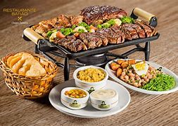
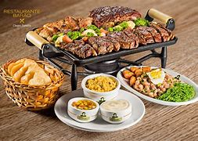

Bienvenidos
Esta en una página web dedicada a subir y mostrar recteas de coscina del mundo
Esta en una página web dedicada a subir y mostrar recteas de coscina del mundo
"Nuestra misión es inspirar y empoderar a los amantes de la cocina a través de recetas accesibles y creativas, promoviendo la alegría de cocinar en casa y disfrutar de comidas deliciosas y saludables."
"Ser la plataforma de referencia para entusiastas de la cocina, promoviendo la diversidad gastronómica y la creatividad en la cocina, y conectando a los usuarios con recetas inspiradoras que transformen cada comida en una celebración."

Aquí encontrarás las mejores recetas jamás creadas en el mundo de la coscina
La temporada navideña es el momento perfecto para reunirse con amigos y familiares y disfrutar de comidas que no solo llenan el estómago, sino también el corazón. Desde aperitivos que deslumbran hasta platos principales que se convierten en el centro de atención, aquí te presentamos diez recetas irresistibles que harán de tus fiestas navideñas un verdadero festín. Prepárate para deleitarte con sabores únicos y presentaciones encantadoras que harán que cada comida sea memorable.
 

La alimentación saludable es aquella que cumple con las necesidades nutricionales que necesita el cuerpo, para mantener una buena salud. Comer sano durante toda la vida previene de sufrir desnutrición, obesidad, así como diferentes enfermedades no transmisibles como la diabetes.
.jfif)